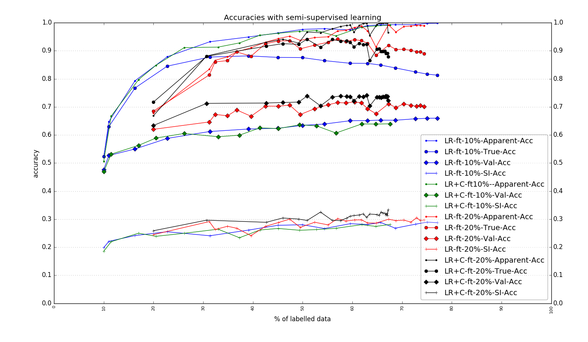

2017-09-16
Self-Learning on GRIDcorpus
Figure 1: Comparison of Apparent accuracy, True accuracy, Val accuracy, Speaker-independent accuracy among training with:
only lipreader at 99% confidence, with finetuning (and not remodelling)
only lipreader at 99% confidence, with remodelling
lipreader at 95% confidence + critic at 10% confidence, with finetuning (and not remodelling)
lipreader at 95% confidence + critic at 10% confidence, with finetuning (and not remodelling)
CONCLUSION

Figure 2: Comparison of Apparent accuracy, True accuracy, Val accuracy, Speaker-independent accuracy among training with:
starting at 10% of training data, only lipreader, at 95% confidence, with finetuning
starting at 10% of training data, lipreader at 95% confidence + critic at 10% confidence, with finetuning
starting at 20% of training data, only lipreader, at 99% confidence, with finetuning
starting at 20% of training data, lipreader at 95% confidence + critic at 10% confidence, with finetuning